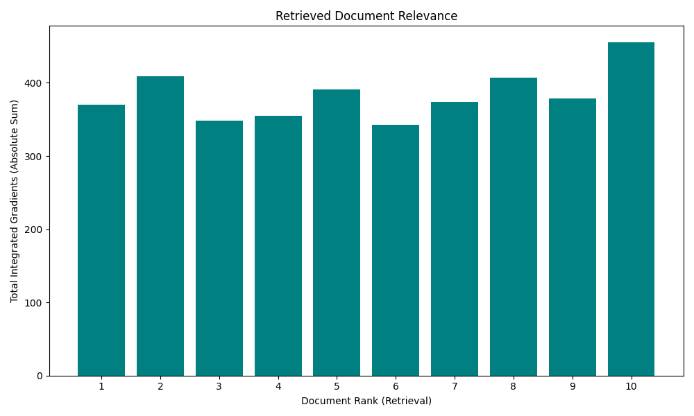
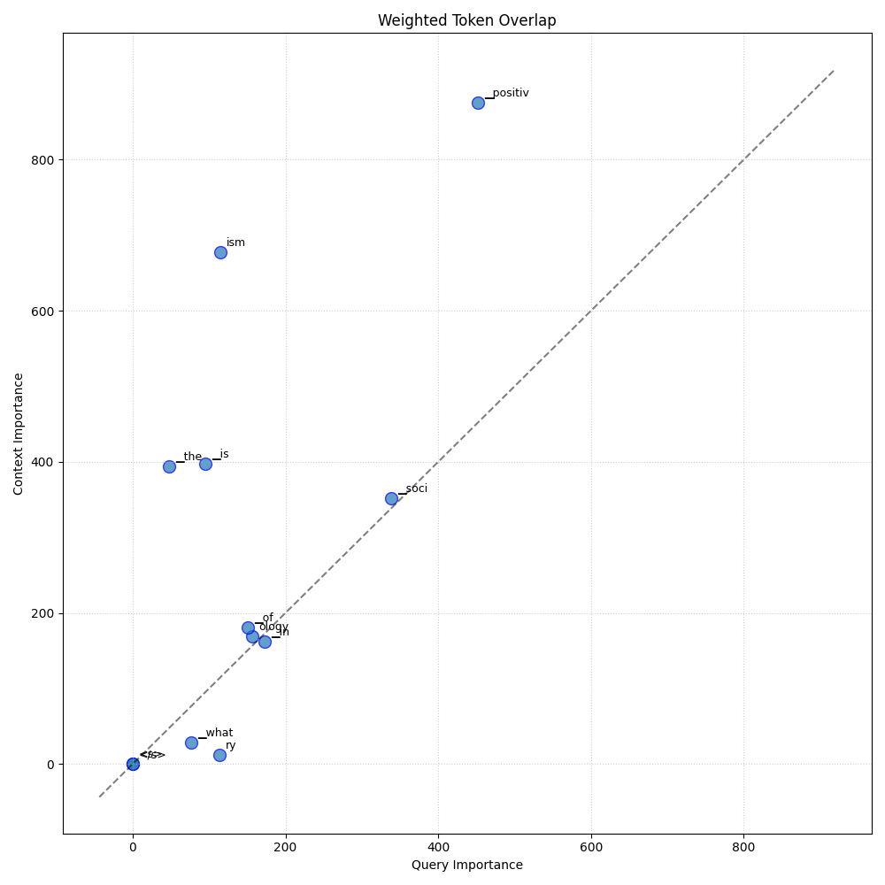
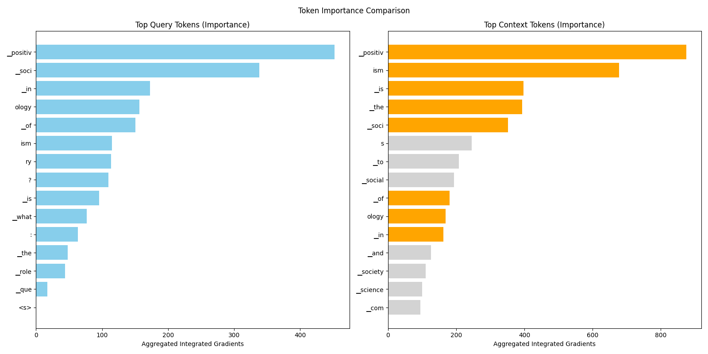

← Back to Global Report
Analysis: query_79_3
Query:
▁que ry : ▁What ▁is ▁the ▁role ▁of ▁positiv ism ▁in ▁soci ology ?
Document Relevance

Weighted Overlap

Token Comparison

Documents
Document 1 (Click to Expand)
▁In ▁soci ology ▁positiv ism ▁is ▁the ▁view ▁that ▁social ▁ph eno mena ▁such ▁as ▁human ▁social ▁behavior ▁and ▁how ▁soc ieties ▁are ▁structure d ▁o ught ▁to ▁be ▁studie d ▁using ▁only ▁the ▁methods ▁of ▁the ▁natural ▁science s